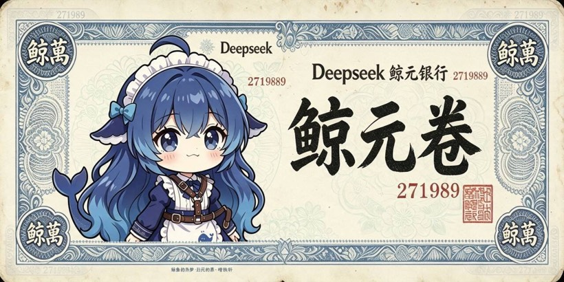

拿到你的 API Key
工具是空的，模型才是它的大脑。这一步你要做的就是：买一个能调用模型的账号，拿到一把钥匙。做完之后，你会在终端里亲眼看到模型回你一句话。
为什么必须有这一步
你在网页上用过的那些 AI，背后都是「某个软件 + 一个模型」。软件本身是免费的，但每一次提问都在消耗模型，而模型是按用量收费的。
API Key 就是你的付费凭证。把它填进任何一个 AI 工具，工具就替你向模型提问，费用从你的账户扣。
第一步：注册账号
浏览器打开 platform.deepseek.com，用手机号或邮箱注册。
几个要注意的地方：
- 部分邮箱域名不能注册，建议用 Gmail、Outlook、Hotmail、Yahoo 这类通用邮箱
- 微信登录目前不支持海外 IP；Google 登录目前不支持中国大陆 IP——如果卡住，换另一种登录方式
- 注册用的手机号/邮箱要能收到验证码，后面还会用到
第二步：实名认证
入口在控制台的「个人信息」页：platform.deepseek.com/profile，找到「实名认证」，按提示提交。
- 个人认证和企业认证在使用权益上没有差别，只是材料和流程不同
- 认证失败最常见的原因：证件号绑定账号数量超限，或者证件号连续输错被临时锁定
- 如果以后需要变成企业认证，个人可以改为企业，但反过来不行
第三步：充值
打开「充值」页 platform.deepseek.com/top_up，用支付宝或微信支付。
- 充最小的一档就够。学生做实验，几元到十几元能跑很久
- 余额永久有效，不会过期；未消费的金额支持退款（在账单页有「退款管理」）
- 公司或社团报销的话：开票入口在「账单」页的「发票管理」，电子发票会发到你填的邮箱
第四步：创建 API Key
左侧菜单找到「API keys」页（platform.deepseek.com/api_keys），点创建，起一个能认出来的名字，比如 class1。
Key 的格式是以 sk- 开头的一长串字符。
如果 Key 泄露了怎么办
不要先改代码，先去删 Key：在「API keys」页选中它 → 点回收箱图标 → 确认删除。删除后立即失效，然后尽快建一个新的替换。中间那段时间如果 Key 还有效，别人就能继续花你的钱。
记下这三样东西
从现在开始，你要配置的每一个工具都只会问你同样三个问题。把它们写在一个文本文件里，后面会反复用到：
# 三要素 · 抄到你自己的笔记里 base_url : https://api.deepseek.com api key : sk-你的这一长串 model id : deepseek-flash
| 它是什么 | 填空式理解 | 写错的后果 |
|---|---|---|
base_url | 请求发到哪台服务器 —— 「去哪家店买」 | 连不上、超时，或者返回一个奇怪的网页 |
api key | 你是谁、从谁的账上扣钱 —— 「刷谁的卡」 | 401（Key 错）或 402（余额不足） |
model id | 要哪一个模型 —— 「买哪个型号」 | 400 / 模型不存在 |
deepseek-chat 和 deepseek-reasoner，这两个名字已经在 2026 年 7 月 24 日停止使用。现在只有 deepseek-flash 和 deepseek-v4-pro。② base_url 不要加
/v1。老教程里写的 https://api.deepseek.com/v1 已经不在官方文档里了，官方现在一律写不带 /v1 的地址。
顺带说清：为什么同一个模型有三个地址
你以后会看到 DeepSeek 出现在三个不同的地址下，很容易以为是三个不同的服务。其实不是。
模型和模型说话时，请求要装进一个「信封」。不同软件认的信封格式不一样，所以同一个模型要开三个入口。DeepSeek 官方三个都提供了：
新手 90% 的报错，都是 Key / 地址 / 协议这三样没对齐。
所以「要用 Claude Code 就必须买中转站」这个说法是不成立的——DeepSeek 官方自己就把 Anthropic 格式的入口开好了。
验证：发出你的第一次调用
打开终端（macOS 的「终端」，Linux 的任意终端Windows 的 PowerShell），把下面命令里的 Key 换成你自己的，逐行粘贴回车。
export DS_KEY="sk-把这里换成你自己的Key" curl https://api.deepseek.com/chat/completions \ -H "Content-Type: application/json" \ -H "Authorization: Bearer $DS_KEY" \ -d '{"model":"deepseek-flash","messages":[{"role":"user","content":"用一句话解释什么是Agent"}]}'
$env:DS_KEY="sk-把这里换成你自己的Key" curl.exe https://api.deepseek.com/chat/completions ` -H "Content-Type: application/json" ` -H "Authorization: Bearer $env:DS_KEY" ` -d '{"model":"deepseek-flash","messages":[{"role":"user","content":"用一句话解释什么是Agent"}]}'
curl.exe。PowerShell 里的 curl 是另一个内置命令的别名，直接用会报错。另外 PowerShell 的换行符是反引号 `，不是反斜杠。成功长什么样
你会看到一大段 JSON。你要找的是两处：
choices[0].message.content—— 模型回你的那句话usage—— 这次花了多少 token，也就是花了多少钱
看到这段 JSON 之后，可以停下来想一件事：你平时用的聊天网页，做的就是这件事，只不过它把这段 JSON 排版好看了。所谓「AI 对话」，本质就是一个 HTTP 请求。
失败长什么样
| 报错 | 意思 | 怎么办 |
|---|---|---|
401 | 认证失败 | Key 复制错了，或者前后多了空格 |
402 | 余额不足 | 去充值页充值 |
400 / Model Not Exist | 模型名不对 | 检查是不是写成了 deepseek-chat |
| 连不上 / 超时 | 地址或网络问题 | 检查 base_url 有没有多写 /v1 |
429 | 请求太快或并发到上限 | 稍等再试；正常学习用量碰不到 |
钱到底花在哪里
知道计价方式，你才能放心大胆地用。以下单位都是元 / 百万 tokens：
| 计费项 | flash 空闲 | flash 高峰 | v4-pro 空闲 | v4-pro 高峰 |
|---|---|---|---|---|
| 输入（缓存命中） | 0.02 | 0.04 | 0.15 | 0.30 |
| 输入（缓存未命中） | 1 | 2 | 4.5 | 9.0 |
| 输出 | 4 | 8 | 13.5 | 27.0 |
换算成人话
1 块钱大约能买 100 万字的输入，或者 20 万字的输出。
所以问问题几乎不花钱。真正花钱的是让 Agent 跑很长的任务。
错开高峰能省一半
高峰时段是北京时间周一至周五 9:00–12:00、14:00–18:00，其余时间价格减半。
批量实验放到晚上跑。
缓存命中便宜 50 倍
连续对话里重复出现的前缀只按缓存价收费。
所以「把稳定的内容放在前面」是真的省钱。

关于你的 Key 的三条纪律
想用 DeepSeek 之外的模型？
DeepSeek 已经够上这门课了，而且国内直连、支付宝付款、便宜。但如果你想知道 Claude、GPT 这些模型是什么感觉，可以看这一页：
做完这一步，你应该有：一个能登录的账号、账上有一点余额、一个存在本地文件里的 API Key，以及一次成功的调用记录。
下一步 → 安装 Node.js